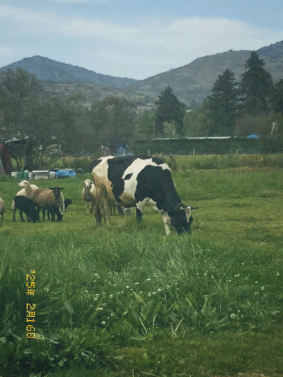
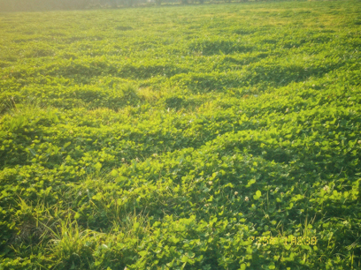

Portafolio


Pequeñas experiencias acompañadas del proceso de creación
Fotografía de un sapo en una visita al acuario, momento que ayudaría a la fijación de la quietud y estancia del animal.

Momento en el que se realizaba una sesión fotográfica en la escuela, práctica que fue realizada en busca de la incomodidad del expectador y provocar una emoción diferente.


Momento experimental junto a un gran amigo, la tarea era ponerse a hacer trazos cortos con el pincel, retratándonos brevemente y sin tanto pensamiento. La soltura lleva al éter
La soltura deja la ventana abierta a que suceda cualquier cosa.
A veces se complican las cosaqs por tanto condicionamiento, este momento me recuerda la facilidad de disfrutar el momento con el medio.


Vacas pastando
Fotografía tomada en vacaciones, momento en el que había vuelto a casa y se mostraba el campo abierto y dispuesto para la atención. Gracias a las caminatas por la tarde, se pudo realizar el encuentro afortunado con los animales.



Todos los derechos reservados.